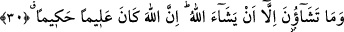

“Artık dileyen Rabbine bir yol tutar.” Yâni artık dileyen rabbine yâni onun sevabına
kendisini ulaştıracak bir vesile edinir. Bir başka ifâdeyle; artık dileyen bu sûre veya
âyetlerin içinde yer alan şeyleri yaparak Rabbine yakınlaşma yolunu tutar.
İbn Şeyh bu âyet-i kerîmeyi şöyle anlamıştır: O günün ağırlığından ve şiddetinden
kurtulmayı dileyen kimse Rabbinin rızâsına kendini yaklaştıracak bir yol tutar. Bu yol
Allah’a itâat yoludur.
30. Sizler ancak Rabbinizin dilemesi (izin vermesi) sâyesinde (bir şeyi)
dileyebilirsiniz. Şüphesiz Allah her şeyi bilendir, hikmet sâhibidir.
“Allah dilemedikçe siz diliyemezsiniz.” Bu cümle, hakkı ortaya koyup onu yol
edinmekte sâdece onların dilemelerinin yeterli olmadığını beyân eden bir cümledir.
Nitekim “şart” edâtının zâhirinden anlaşılan da budur. Buna göre âyetin mânâsı şöyle
olur: “Sizler yol edinmeyi diliyemezsiniz ve hiçbir vakit bunu elde etmeye gücünüz
yetmez. Bu yolu ancak, Allah Teâlâ’nın sizin için dilediği vakitte edinebilirsiniz. Zira
kulun dilemesinin, “kesb/fiilleri kazanmak” noktasından başka hiçbir rolü yoktur. Asıl
etki ve yaratma Allah’ın dilemesine bağlıdır. Bu konuda söylenmesi gereken şudur:
“Dileme” kulun ihtiyâri fiillerinden değildir. Tam tersine “dileme”, Allah’ın onu
dilemesine bağlıdır. Bu tesbit, kulun dilemesinin taalluk ettiği fiillerin kulun ihtiyarı
sonucunda vuku bulması ve onun dilemesiyle gerçekleşmiş olması durumuyla çelişmez.
Her ne kadar kulun dilemesi bu konuda müstakil, bağımsız değilse de... Dile
getirdiğimiz bu anlayış, Ehl-i sünnetin görüşü olan “cebr-i mutavassıt” olarak
adlandırılan görüştür. Ehl-i sünnetin kanâatine göre irâde meselesi iki ucun arasındadır.
Daha açık söylemek gerekirse ehl-i sünnet, kaderi inkâr eden görüşle kulun hiç
irâdesinin olmadığını söyleyen cebr görüşü arasında bir yerdedir.
Aynu’l-maânî’de şu açıklama yer almaktadır: “Artık dileyen Rabbine bir yol tutar”:
Yâni artık kulluk mükellefiyeti hüccetini dileyen Rabbine bir yol tutar. “Allah
dilemedikçe siz dileyemezsiniz”: Yâni Allah dilemedikçe siz uluhiyetin kahrını ortaya
çıkarmayı dileyemezsiniz.
“Allah hakkıyla bilendir, hüküm ve hikmet sâhibidir.” Bu cümle, Allah’ın
dilemesinin ilim ve hikmete dayalı olduğunu haber vermektedir. Buna göre âyet-i
kerîmenin mânâsı şöyledir: Allah Teâlâ ilim ve hikmette son derece üstündür. Herkese
lâyık olduğu şeyi yapar. Onlar için ancak ilmin ve hikmetin gereği olan şeyleri diler.
Kâşânî ise bu âyetleri şöyle anlamaktadır: Sizler ancak ve ancak benim dilememi
dileyebilirsiniz. Önce ben size dilerim sonra siz beni dilersiniz. Dolayısıyla sizin
irâdenizden önce benim irâdem vardır. Hattâ dış dünyaya yansıyan, benim dışa yansıyan
irâdemin ta kendisidir. Allah Teâlâ onlara bahşetmiş olduğu bilgileri hakkıyla bilir. O,